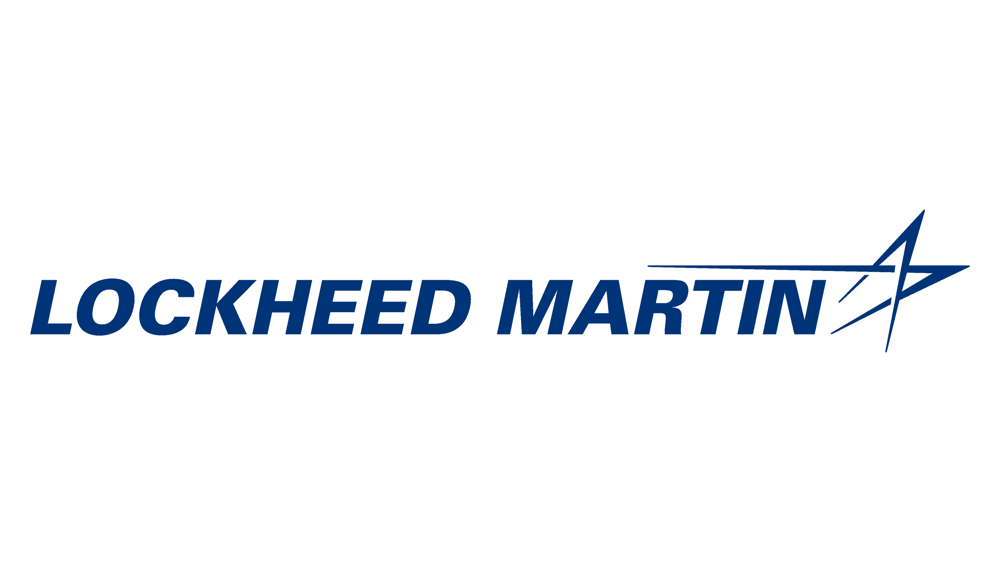

Surender Kannah — Autonomous Systems & Robotics
Affiliations

About Me
I’m an autonomy and robotics engineer focused on safety‑critical systems, robust GNC, dense perception, and multi‑sensor fusion. My work spans orbital docking, SLAM‑based navigation, embedded ML, and mission‑critical defense autonomy.
This page highlights selected projects and demos that reflect my trajectory toward orbital‑grade autonomy and mission‑critical robotics.